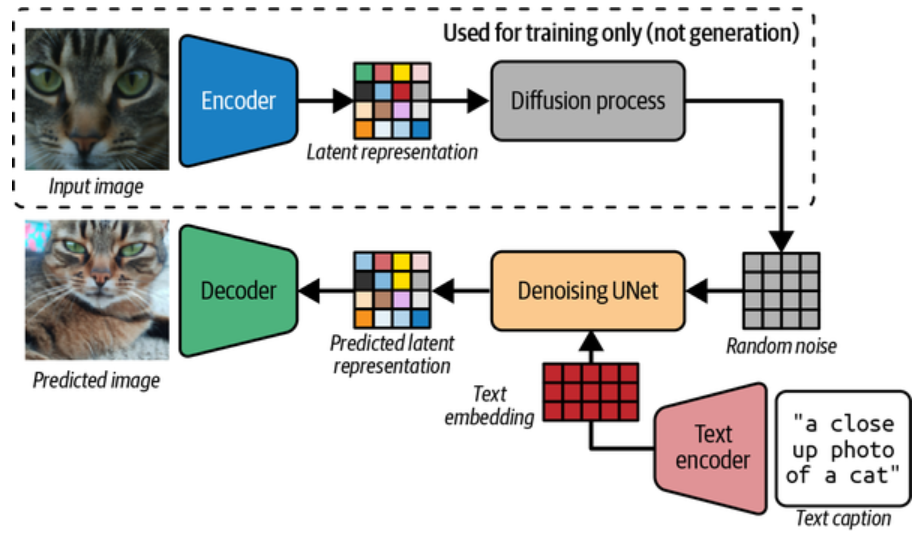
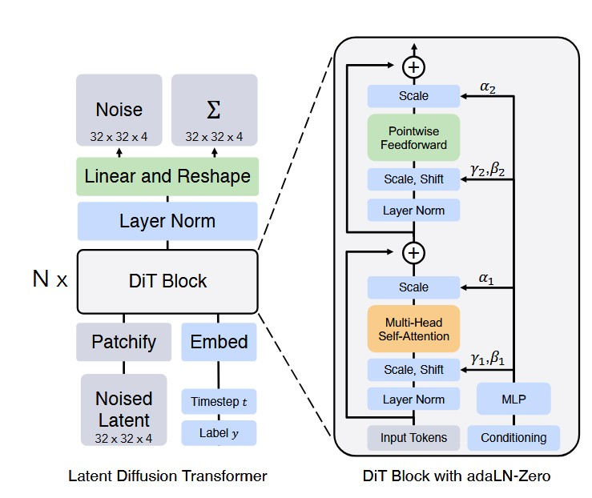
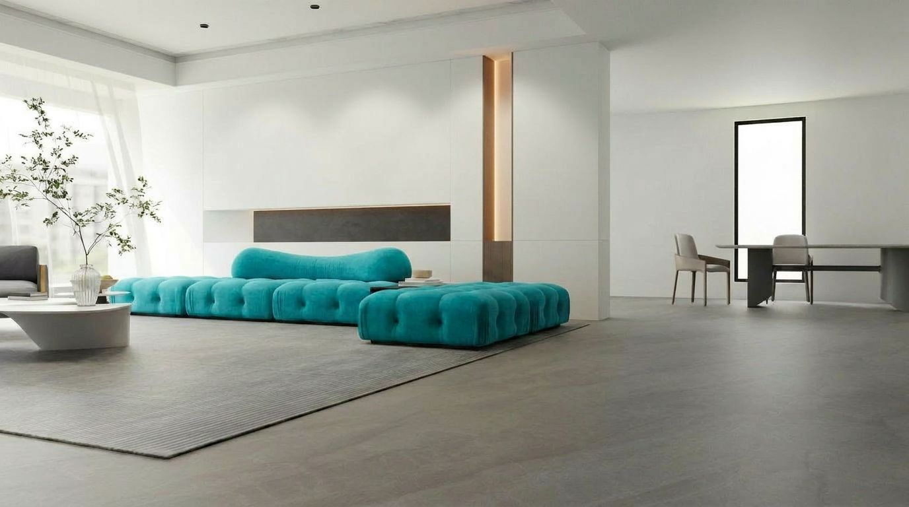
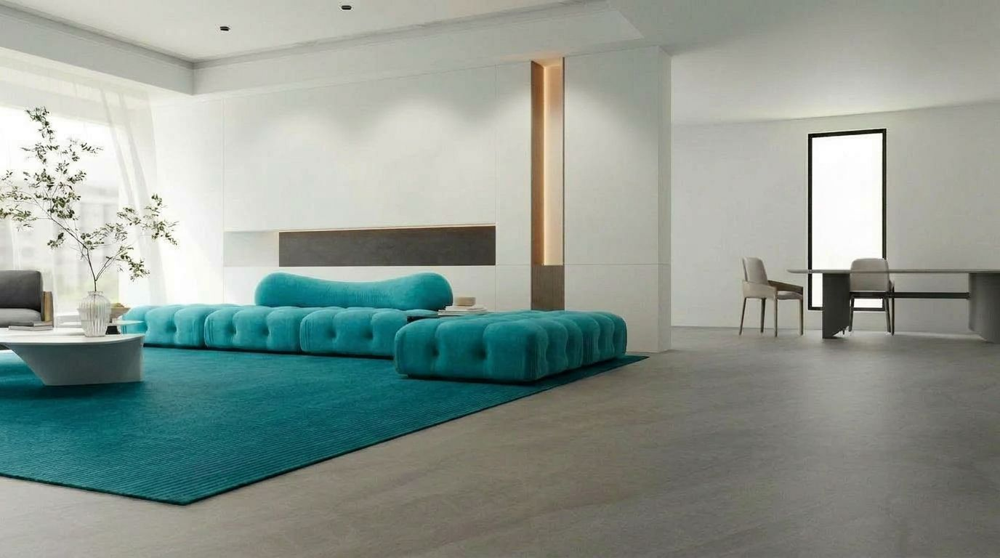
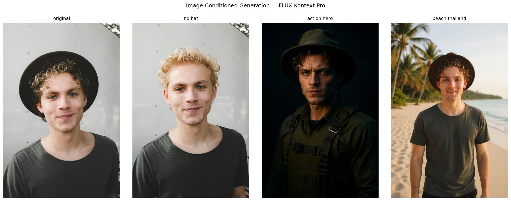
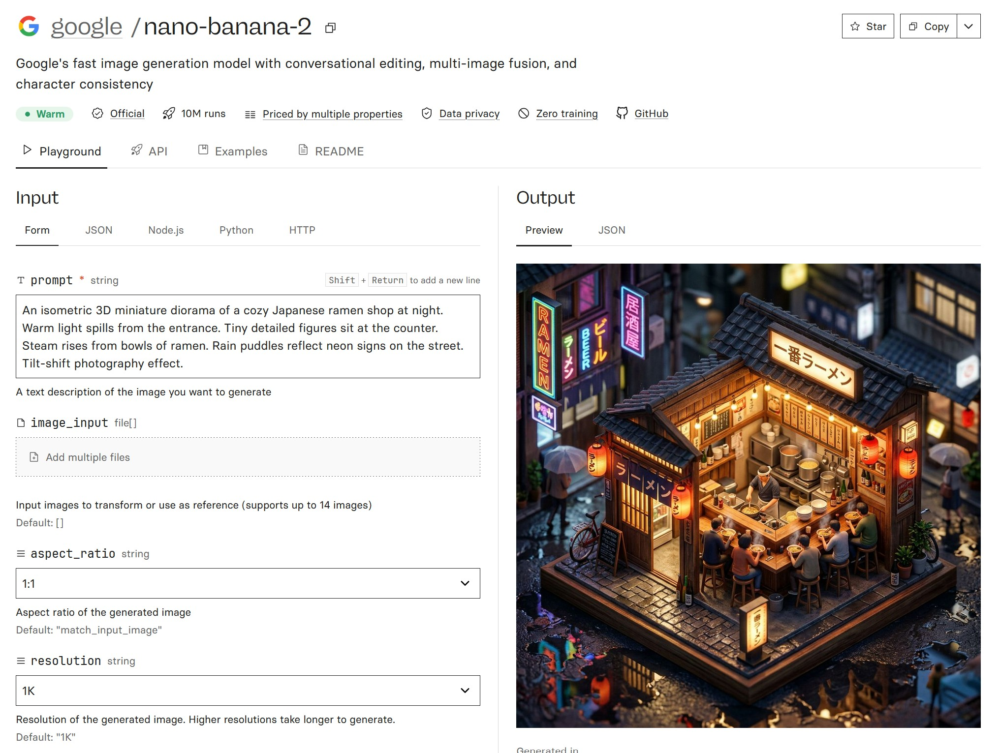
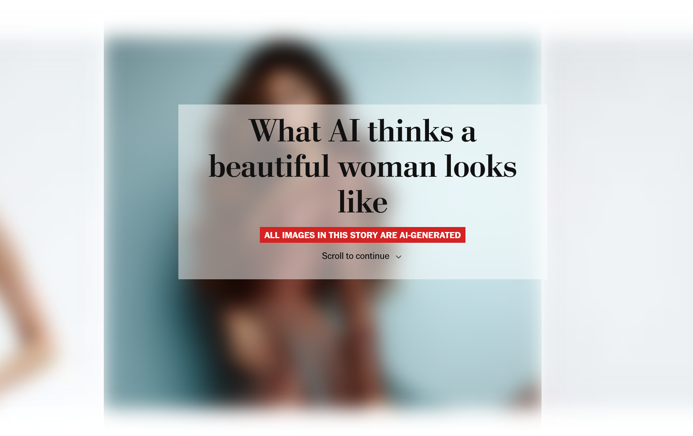

10 - GenAI: Modern Systems
CAS Deep Learning - Computer Vision (Part1)
Institute for Data Science I4DS, FHNW
Overview
- Why pixel-space diffusion is too expensive
- Latent Diffusion & Stable Diffusion
- Modern architectures: Diffusion Transformers & multimodal systems
- Adapting models: prompting → reference → LoRA → fine-tuning
- Case study: novel-domain synthesis
- Deployment choices & responsible use
Motivation
Diffusion in Pixel Space
Start from random noise, iteratively denoise:
\[\mathbf{x}_T \sim \mathcal{N}(\mathbf{0}, \mathbfit{I}) \rightarrow \mathbf{x}_{T-1} \rightarrow \cdots \rightarrow \mathbf{x}_0\]
How do we make diffusion efficient enough for high-resolution images?
Practical Workflows Demand Speed
- High-resolution images
- Many candidate images
- Fast previews
- Repeated prompt iteration
- Image edits and variations
- Batch generation
The Pixel-Space Bottleneck
A \(512 \times 512\) RGB image has: \[512 \times 512 \times 3 = 786{,}432 \text{ values}\]
And diffusion processes this representation many times: \[\text{image size} \times \text{denoising steps} \times \text{denoiser cost}\]
Resolution Makes It Worse
| Resolution | RGB values |
|---|---|
| 256 × 256 | 196,608 |
| 512 × 512 | 786,432 |
| 1024 × 1024 | 3,145,728 |
1024² has 4× the values of 512². And every step processes them.
The Idea
Don’t run diffusion on pixels if a smaller representation is enough.
Latent Diffusion
Stable Diffusion Examples

Stable Diffusion (Rombach et al. (2022)) — canonical latent diffusion system.
Latent Diffusion Architecture

Text encoded → diffusion runs in VAE latent space → VAE decoder produces image.
Training: Encode First
\[\mathbf{x} \xrightarrow{\text{VAE encoder}} \mathbf{z}\]
The diffusion model is trained to denoise noisy versions of latents \(\mathbf{z}\) — never pixels.
Sampling: Diffuse in Latent Space
\[\mathbf{z}_T \rightarrow \mathbf{z}_{T-1} \rightarrow \cdots \rightarrow \mathbf{z}_0 \xrightarrow{\text{VAE decoder}} \hat{\mathbf{x}}\]
For image-to-image / inpainting / editing, VAE encoder runs at inference time too.
Division of Labor
| Component | Role |
|---|---|
| Text encoder | semantic conditioning from prompt |
| VAE encoder | compress images to latents |
| VAE decoder | latents back to pixels |
| Diffusion model | denoise / generate in latent space |
| Sampler | controls iterative denoising |
Why It Works
- Smaller denoising representation
- Less memory
- Cheaper sampling
- Practical at high resolution
- Easier to adapt and experiment
Stable Diffusion doesn’t draw pixels — it generates latents, then decodes.
Modern Architectures
Beyond Stable Diffusion
- The denoiser itself is evolving (U-Net → Transformer)
- Image gen is integrated into multimodal assistants
- Many commercial systems aren’t fully disclosed — focus on the ideas
U-Net → Diffusion Transformer

Image / latent → sequence of patch tokens. Self-attention denoises them (Peebles and Xie (2023)).
U-Net vs. Diffusion Transformer
| Aspect | U-Net | Diffusion Transformer |
|---|---|---|
| Representation | spatial feature maps | token sequence |
| Main op | conv + attention | self-attention + MLP |
| Inductive bias | strong image locality | general sequence modeling |
| Conditioning | cross-attention | cross-attn / conditioning tokens |
| Multimodal | possible | more natural |
U-Nets remain effective — but transformers fit a broader trend.
Tokens as a Common Interface
\[\text{text} \rightarrow \text{text tokens}\]
\[\text{image / latent} \rightarrow \text{visual tokens}\]
\[\text{reference image} \rightarrow \text{reference tokens}\]
All can interact through attention in a unified architecture.
Multimodal Diffusion Systems
Conditioning isn’t only text — also images, masks, reference subjects, editing instructions, prior outputs.
- Change only the background
- Preserve product identity across scenes
- Iteratively refine in a chat
Example: Interactive Editing
Source
Starting image of a living room (Unsplash).
Step 1: Remove Object
“Remove the book on the floor, replace with clean floor”
Step 2: Recolor

“Recolor sofa and ottoman to vibrant turquoise”
Step 3: Match Style

“Change the carpet color to match the turquoise sofa” (Nano Banana 2, Raisinghani (2026))
What’s Inside a Modern Assistant?
- Understanding text instructions
- Understanding uploaded images
- Maintaining conversational context
- Planning the edit / generation
- Calling a specialized image generator
- Calling an editor
- Checking safety constraints
- Returning a unified response
Model vs. System
Modern multimodal generation is not one model — it’s a system for understanding, planning, generating, editing, and iterating.
Adapting Generative Models
Two Questions
Can the model generate good images?
And:
Can it generate the right images, consistently, for this use case?
Subject Consistency

Same person across different scenes — requires more than a prompt.
The Adaptation Spectrum
| Method | What changes | When |
|---|---|---|
| Prompting | only the text | fast exploration |
| Reference images / editing | input context | one-off subject or local edit |
| Masks / inpainting / control | constrained generation | spatial / structural control |
| Textual inversion | a learned token | lightweight concept |
| LoRA / DreamBooth-LoRA | small adapter weights | persistent specialization |
| Full fine-tuning | many / all weights | strongly specialized domain |
The Rule
Don’t fine-tune because the model is imperfect. Fine-tune when the same failure appears repeatedly and simpler controls aren’t enough.
Prompting First
Cheapest control over subject, style, camera, lighting, composition, mood, format.
A Typical Workflow
Modern models can do a lot without any training.
When LoRA Still Makes Sense
Freeze base weights, learn a small low-rank update:
\[\Delta W = BA\]
Small adapter, loadable on top of a base model.
Good LoRA Use Cases
- Recurring character or mascot
- Specific product / object
- Consistent brand or illustration style
- Specialized domain (fashion, architecture, microscopy, industrial)
- Local / private deployment with open weights
- Many lightweight variants from one base
Where LoRA Doesn’t Help
- One-off images
- General image quality
- Factual reasoning
- Precise spatial layout
- Things solvable with masks, references, or editing
LoRA is no longer the default answer — it’s the answer for persistent specialization.
Workflow Cheat Sheet
| Situation | Preferred workflow |
|---|---|
| One-off image | prompt + reference + editing |
| Product in a few scenes | reference + img2img / inpainting |
| Product / character reused widely | DreamBooth-LoRA / LoRA |
| Company-wide style | style LoRA |
| Specialized domain | LoRA, full fine-tune only if needed |
Tooling
- HF Diffusers — LoRA / DreamBooth-LoRA training
- HF FLUX QLoRA — quantized LoRA example
- Replicate — hosted FLUX fine-tuning, UI or API
Full Fine-Tuning
- Updates many / all parameters
- Maximum flexibility — but expensive and risky
- Needs more data, more compute, larger artifacts
- Justified for medical, satellite, industrial inspection, proprietary domains
- Not the first choice
Evaluating Adaptation
- Preserves the subject / product / style?
- Still responds to different prompts?
- Overfits to training examples?
- Reduces diversity?
- Introduces artifacts?
- Improvement worth the maintenance cost?
Comparison Protocol
Did adaptation solve a real, repeated failure mode?
Case Study: Novel Domains
Where General Models Struggle
| Domain | Task | Main risk |
|---|---|---|
| MRI → CT (Schärer (2023)) | image-to-image translation | wrong anatomy / dose-relevant structure |
| Solar flares (Ramunno et al. (2024)) | conditional / temporal synthesis | implausible flare patterns |
| Industrial defects | rare-defect generation | synthetic artifacts mismatch real |
Practical Workflow
- Define why generation is needed
- Start with a supervised domain-specific baseline
- Use generative models when uncertainty / diversity / augmentation matters
- Condition on what matters: images, masks, metadata, time, sensors
- Evaluate utility, not just realism
Example: MRI → CT
- Goal: not pretty CT-like images — preserve anatomy for downstream use
- Collect paired, registered MRI/CT
- Train supervised translation
- Evaluate structural accuracy + downstream usefulness
- Add generative methods only if they clearly help
Physical validity > photorealism.
Example: Solar Activity
- Generate images conditioned on flare class
- Predict future observations from past frames
- Simulate flare-related changes
- Augment with rare-event examples
- Use temporal info, multi-channel sensors, event labels as conditions
Realism is necessary, not sufficient — outputs must be scientifically meaningful.
Deployment & Responsible Use
How Will You Actually Use This?
Three main access patterns:
- Hosted API — fastest, opaque
- Enterprise platform — governance, integrated cloud
- Open-weight model — control, operational responsibility
Three Access Patterns
| Pattern | Examples | Strengths | Limits |
|---|---|---|---|
| Hosted API | OpenAI, Google, Replicate, fal.ai | fast, strong models, no GPUs | opaque, vendor dependency |
| Enterprise platform | Vertex AI, Azure, Bedrock | IAM, logging, quotas, compliance | setup, lock-in |
| Open-weight | HF Diffusers, ComfyUI, self-host | control, reproducibility, privacy, adapters | ops burden, GPU cost |
A Practical Rule
Start with a hosted API. Move to an enterprise platform when governance matters. Use open-weight models when you need control, reproducibility, privacy, or adaptation.
Replicate

Hosted access to both proprietary and open-weight models.
Image Models Hallucinate Too
- Invented objects, text, logos, identities
- Wrong physical relationships
- Wrong medical / technical details
- Impossible geometry
- Misleading context
Visually convincing ≠ factually correct.
Plausible but Wrong
The new electric Ferrari Luce — with a visible exhaust pipe?
Synthetic Data: Useful
- Generate rare object poses
- Augment defect-detection datasets
- Simulate unusual lighting
- Privacy-preserving demo examples
- Early prototype training
Synthetic Data: Risky

Quality degrades under synthetic-data pollution / model collapse (Alemohammad et al. (2023)).
Question is not good or bad? but: does it improve performance on the real target distribution?
Bias in Generated Images

Models inherit the biases of their training data. (Source: Washington Post.)
Bias Examples

Stereotyped associations across occupations, beauty, wealth, culture, dignity.
Risk Depends on Use Case
- Creative toy app vs. hiring tool
- Educational content vs. public campaign
- Internal demo vs. medical assistant
- Treat outputs critically — not as neutral
Provenance
- Camera capture or model output?
- Edited after capture?
- Which parts modified?
- Metadata describing origin?
- Watermark / content credential?
- Cryptographically verifiable source?
Real or Not?

Increasingly hard to tell. (Source: Spiegel.)
Provenance Approaches
- Visible / invisible watermarks
- Metadata-based provenance
- Cryptographic signatures
- Synthetic-image detectors
- Content credentials
None is perfect. Provenance is a system-level problem.
Copyright & Licensing
- What data trained the model?
- Is the model license compatible with your use?
- Can outputs be used commercially?
- Could outputs resemble protected examples?
- Adapters / fine-tunes licensed separately?
- Reference images licensed by you?
Licensing is part of model selection, not an afterthought.
Responsibility Checklist
- What’s the risk level of the use case?
- Could the image mislead people?
- Identity / privacy / consent issues?
- Copyright / licensing constraints?
- Could output reinforce stereotypes or biased associations?
Takeaways
- Latent diffusion made high-res generation practical
- Transformers + multimodality are the architectural direction
- Adapt with the smallest intervention that works
- Choose deployment by control vs. convenience tradeoff
- Responsibility is part of engineering — not optional